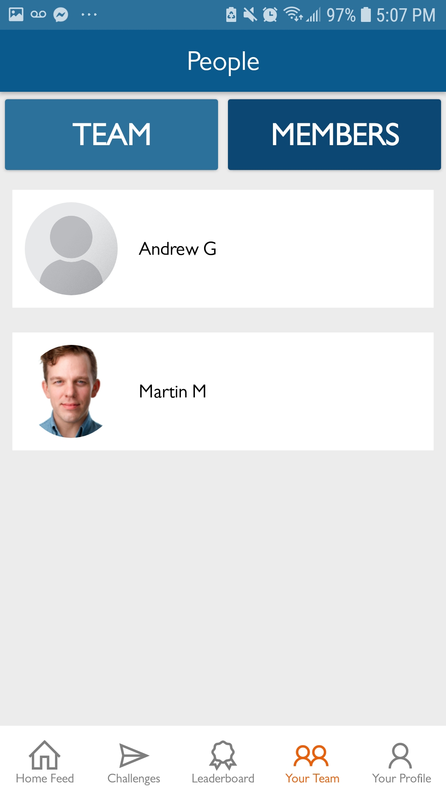
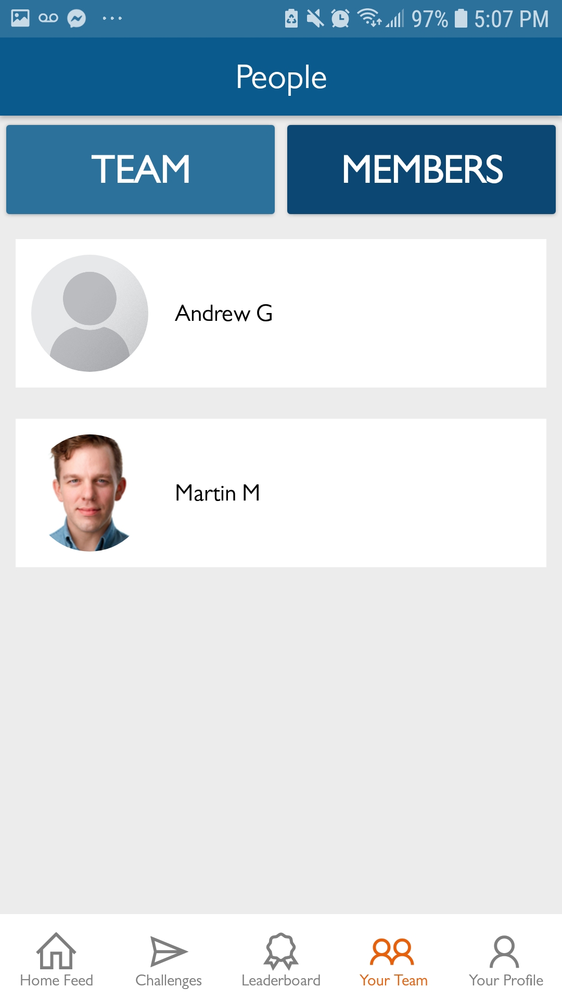
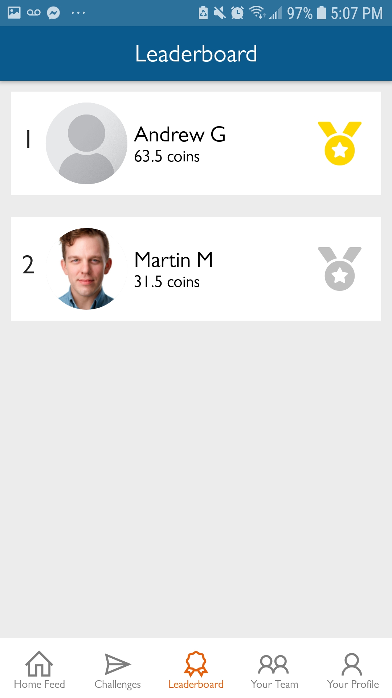
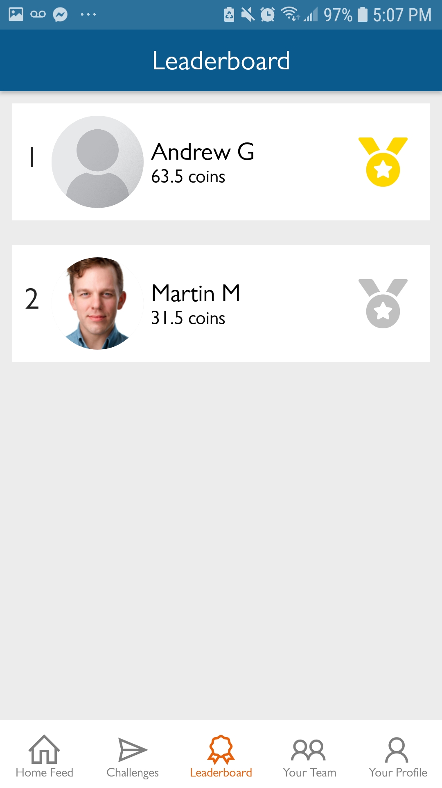

<- Go back
Challenge For Change
July - August 2019
Challenge For Change is an instagram-like social app with an added component. You can challenge your peers and journey together to achieve a common goal. For Team World Vision's Chicago Marathon, my team and I created a fitness iteration of this app to help team members achieve their fitness goals. The many features of this app include a feed of completed challenges that include likes and comments, push notifications, user profiles, a leaderboard and an ecosystem of coins. The app is fully adaptable for use in social campaigns and for raising donations.

Design Thinking
Concept and Background
In today's world, challenging close friends/groups through social media is a growing viral trend. For instance, the ALS Ice Bucket Challenge took the world by surprise as they've acquired millions of participants and raised 115 million dollars. By studying trends such as the ALS Ice Bucket Challenge, we've learned that people enjoy participating in challenges that are social, entertaining and have a meaningful purpose. The Challenge for Change app was designed with that in mind.
Progressive Web App vs. Native App
Along with a couple of interns, I researched the feasibility of implementing this application either through a progressive web app or a native mobile app. After extensive research we determined that a native application would be the best way to engage our targeted demographic for this app (millenials). A reason for this is that the app was initially designed to raise donations and we found that users easily trusted native apps with their payment information (due to people's perception of web security). Another reason is that mobile apps tend to have better performance and so we wanted to focus on giving the user a better and unique experience.
Adoption
The design of the app was later modified for internal use within Team World Vision's Chicago Marathon which removed the need for processing donations. The focus for this iteration was persistent engagement for existing donors. In future iterations, donations will be integrated once the app gains momentum. In conjunction with Team World Vision's Chicago Marathon, the app is also being piloted for World Vision's 30 Hour Famine campaign. The app will be launched for use within churches across Canada.
My Role
My teammate and I lead the end-to-end design and development of the application. Our responsibilities/tasks include designing the wireframes, selecting the front-end and back-end technologies, designing and building the code, managing the database and liasing with stakeholders to meet project deliverables.
Technologies Used
- NativeScript
- Angular 7
- Google Firebase
- Figma
Screenshots (scroll right)

 

 
